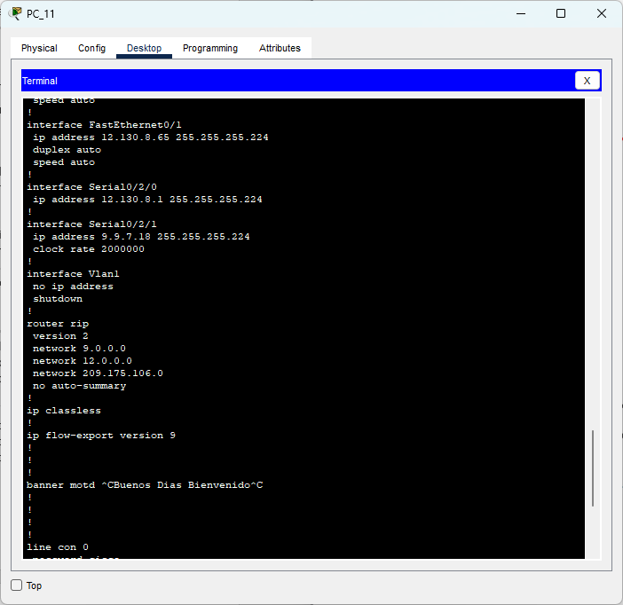
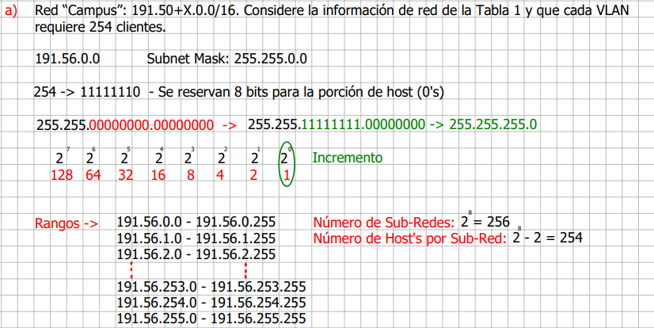

Resolución de problemas e investigación, configuración e implementación de redes y tecnologías LAN e interconexión utilizando la sala de redes emulada en Packet Tracer.
Proyecto Final
Carlos Farouk Abdalá Rincón
Gabriel David Jimenez Mosquera
Julián Felipe Pulido Castro
1. A continuación, se mostrara el cableado estructurado y la implementación de la topología de Red:
Oficinas
Servers
Campus
Casa Inteligente
2. Comunicación entre los usuarios de la misma VLAN en la red “Campus”.
Para verificar la conexión entre pc´s de pertenezcan a la misma vlan, se sigue el el procedimiento de seleccionar un pc, utilizar el comando ipconfig para verificar a que vlan pertenecen, posteriormente se utiliza el comando ping y se acompaña de una direccion que pertenezca a la misma vlan.
Se observa que hay conexión entre los usuarios de la misma VLAN en la red "Campus".
3. Comunicación entre los usuarios pertenecientes a VLANs diferentes en la red “Campus”.
Para verificar la conexión entre pc´s de pertenezcan a vlan´s distintas, se sigue el procedimiento de seleccionar un pc, utilizar el comando ipconfig para verificar a que vlan pertenecen, posteriormente se utiliza el comando ping y se acompaña de una direccion que pertenezca a una vlan distinta.
Como se puede observar, el primer paquete se pierde al momento de realizar el protocolo ARP, sin embargo, los demás paquetes llegan exitosos.
4. Soportar el protocolo PVRST (Per VLAN Rapid Spanning Tree) y 802.1Q trunking en las LANs.
Como se puede ver en la imagen, los Switches del Campus cuentan con Protocolo Spanning Tree para evitar Bucles además de contar con el Trunking en cada interfaz requerida para la interconexión entre dispositivos. En el caso del Campus, los cuatro Switches tienen asignados los dos requerimientos de la misma forma que se ve en la imagen.
Y para este caso podemos ver que el MutiLayer Switch correspondiente a la oficina, podemos ver que el Trunking se asignó a las interfaces correspondientes a la VLAN 200.
5. Soportar el enrutamiento RIPv2 en las interfaces de routers requeridos.
Para verificar la configuración de RIPv2 en cada router, luego de configurar el protocolo en cada router, y añadir cada red a cada router las redes aledañas que debe reconocer, se verifica su configuración con el comando show running-config donde se aprecia su apartado de router rip, donde por cada router se observan las redes que debe conocer.
Router-Campus
Router-ISP

Router-Oficinas
6. Subneteo teniendo en cuenta los espacios de direccionamiento presentadas a continuación:
a. Red “Campus”: 191.50+X.0.0/16. Considere la información de red de la Tabla 1 y que cada VLAN requiere 254 clientes.

b. WAN (enlace seriales y Cloud): 12.130.2+X.0/24.
c. LAN de servidores: 209.175.100+X.0/24. Considere que la LAN requiere 30 clientes.
7. Para la LAN Mi casa “Inteligente”, considere la información de red de la Tabla 2 (no realizar Subneteo). Para las VLANs en la WLAN “Oficinas” considere los espacios de direcciones VLAN 5: 192.168.5+X.0/24 y VLAN 200: 192.168.200+X.0/24. Adicionalmente, tenga en cuenta la información de red de la Tabla 3 (no realizar Subneteo).
Como se puede ver en la imagen, el servidor de la oficina cuanta con los espacios de direccionamiento requeridos para la generación de DHCP, por lo que los dispositivos correspondientes a cada VLAN tendrán una dirección comprendida en dicho espacio.
Por otro lado, si nos vamos al HomeGateway de la casa Inteligente, podemos ver que en la sección LAN se establece el valor inicial de direcciones requeridas para esta sección. La IP mostrada en la imagen será la Default Gateway de los diferentes dispositivos IoT, a continuación, se mostrará como el DHCP de los diferentes dispositivos de la casa adquieren una dirección correspondiente a la misma red.
8. Todos los usuarios, de todas las redes (i.e., “Campus”, Mi casa “inteligente”, “Oficinas”), deben tener acceso a la página web personalizada alojada en el Servidor Web. Las conexiones HTTP se deben realizar desde el puerto 80 y el nombre de dominio será gestionado por el servidor DNS. Este nombre debe tener el siguiente formato: Iniciales_nombres_estudiantes.net (e.g., jmalk.net).
Para habilitar el uso de la página web personalizada se utilizaron los servicios de DNS y Web en la sala de servidores, por medio de estos 2 servicios se crearon los dominios aceptados para la página y su traducción de direcciones de red a un nombre de hosting. Se pueden observar los resultados de búsqueda de la página desde diferentes hosts entre diferentes redes. PC admin en oficina:
PC en la casa inteligente
PC en el Campus
*La carga de imágenes de fondo, se debe al procesamiento de packet tracer, y del tiempo esperado para tomar los pantallazos.
9. Los nodos terminales, tipo smartphone y Laptop, deben tener también acceso a la interfaz gráfica de gestión de los dispositivos de Internet de las Cosas que se incluyen en “Mi Casa “Inteligente”.
Como se puede ver en las imágenes, tanto el SmartPhone, como la Laptop pueden ingresar al IoT monitor que permite gestionar y utilizar los diferentes dispositivos IoT conectados a el HomeGateway.
10. Los PCs de la red “Campus” deben correr un script cliente basado en socket TCP y conectarse con el servidor socket-TCP corriendo en el Servidor Web. El script lo puede desarrollar en el lenguaje de programación de su preferencia y disponible en Cisco Packet Tracer (Hint. Pestaña “Programming”).
Para el desarrollo de este apartado, se crearon proyectos en cada computador de la red de campus, estos proyectos fueron desarrollados en el lenguaje Python, este código tiene como funcionalidad conectar el computador, con su servidor de DHCP correspondiente, el cual también tiene un proyecto desarrollado en el mismo lenguaje, a continuación, se tendrán los resultados de tanto el servidor como de los computadores.
11. Documentar las configuraciones de todos los dispositivos de red en un archivo .txt (Hint. show running-config) y construya la tabla de direccionamiento de toda la topología de red.
Enviado en paquete comprimido.
Resultados y Análisis
Analisis 1
Para el análisis de los datos que se crean cuando un pc de cualquier red quiere conectarse, con el servidor web, podemos afirmar, que el proceso de RIP en los routers es esencial, esto debido a que por medio de ellos, el pc encuentra la red especifica a la cual pertenecen los servidores Web y DNS, estos pasos por los nodos terminales se mostraran a continuación.
Para este ejemplo, usamos un pc en campus, como se puede observar, se utilizo el comando tracert para conocer la ruta que sigue el paquete de datos, que se comunicara en este caso con el servidor DNS, teniendo en cuenta que el servidor Web se encuentra en la misma Vlan, el proceso del camino será el mismo. Para el análisis podemos observar como el paquete llega primeramente a su puerta de enlace perteneciente a su Vlan correspondiente, luego de eso, llega a la interfaz serial del router ISP, el cual al tener configurado el RIP, conoce la red donde se encuentra alojada esa direccion ip, que es a donde finalmente llega el paquete.
Analisis 2
Para analizar el flujo de datos de los dispositivos Wireless de oficina y de la casa inteligente, primeramente, veremos el funcionamiento de algunos dispositivos Iot en la casa inteligente siendo manejados desde un smartphone.
Ahí podemos observar como desde el celular se conecto a el IotMonitor, usando la direccion ip del home Gateway, para este ejemplo seleccionaremos el ventilador y cambiaremos su estado de off a high.
Como se observa el estado del ventilador cambio y ahora está en su máximo funcionamiento.
Ahora procederemos a realizar una conexión ping entre este mismo smartphone y una laptop en oficina, esto para probar la interconectividad de las redes, observando así nuevamente el funcionamiento del protocolo RIP en los routers de las redes.
Como se puede observar se realizaron tanto el comando de ping como el comando de tracert, por medio de estos comandos podemos observar como hay paquetes que se pierden, estos corresponden a el protocolo ARP, por el cual el smartphone trata de buscar una direccion que no conoce, y debido a este protocolo, apoyado con el router de oficina, puede encontrar su host de destino.
Analisis 3
Para analizar el socket enviado por un pc de campus a su correspondiente servidor DHCP, podemos observar que debido al socket el pc manda solicitudes a todos los dispositivos que conoce, sin embargo, el único dispositivo que puede responder, y setear un mensaje de respuesta es el servidor, como se verá a continuación, primeramente, el proceso del computador de enviar solicitudes, y posteriormente el resultado de haber encontrado conexión con el servidor.
Como se puede observar, aquí están los diferentes paquetes que los computadores envían, estos al llegar a sus respectivos routers, se direccionan a su destino. En la siguiente imagen se mostrara que sucede cuando el servidor recibe uno de estos paquetes, al enviar una respuesta al host que lo envio.
Como se puede observar, el computador recibió una respuesta, en este caso fue su primera respuesta por parte del servidor, y según el código implementado, el estado cambio a 1.
Conclusiones del Laboratorio
1. Se logro comprender el funcionamiento y estructuración de una red, construyendo y configurando LANs y LAN-WAN basadas en IPv4 en cada una de las partes de la topologia de Red.
2. Se implementaron los servicios de navegación basados en HTTP y socket TCP para poder ver contenidos web en toda la topologia de red.
3. Las configuraciones de los servicios de DHCP a través de la gestión dinámica de direcciones IP fue fundamental para el desarrollo de laboratorio. Además, la utilización del servicio DNS nos ayudo a traducir las direcciones IP a nombres de dominio y con esto facilitar la conexión a la red.
Referencias
[1] Jeremy D. Cioara. Subnetting Examples [En línea]. Disponible en: https://bit.ly/3v6crh
[2] Llorca Alcón, Manuel. "Configuración de una VLAN mediante Switches CISCO". RiuNet repositorio UPV. https://riunet.upv.es/handle/10251/1424?tl=a (accedido el 23 de septiembre de 2022).
[3] "Cómo configurar un switch de red para su empresa en 6 pasos". Cisco. https://www.cisco.com/c/es_mx/solutions/small-business/resource-center/networking/how-to-setup-network-switch.html (accedido el 23 de septiembre de 2022).
[4] Cisco, "Networking Essentials. Module Group 5."
[5] Juan M. Aranda, “Basic configuration”, Slides.
[6] Jeremy D. MicroNugget: How to Select Subnet Sizes for VLANs [En línea]. Disponible en: https://bit.ly/3BuXHeV
[7] "Tipos de Spanning Tree (CST, PVST+, RSTP, MSTP)". Tech Riders. https://techriders.tajamar.es/tipos-de-spanning-tree/#:~:text=Per-VLAN%20Spanning%20Tree%20(PVST,VLAN%20mientras%20bloquea%20otras%20VLAN.
[8] "802.1Q Encapsulation Explained". NetworkLessons.com. https://networklessons.com/switching/802-1q-encapsulation-explained.
[9] Biblioteca Universitaria - UTB. TUTORIAL TEÓRICO PRÁCTICO DE LABORATORIO RIPV1, RIPV2, EIGRP Y OSPF. https://biblioteca.utb.edu.co/notas/tesis/0063133.pdf.